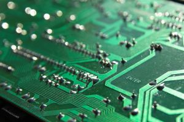

A weblog focused on interesting circuits, ideas, schematics and other information about microelectronics and microcontrollers.
E-books
Disclaimer
Because I have not tested all electronic circuits mentioned on this pages, I cannot attest to their accuracy; therefore, I do not provide a warranty of any kind and cannot be held responsible in any manner.
SD
SD Audio Player with ATTiny
8. August 2010 - 14:37 — adminThis is a simple SD audio player biult with only an 8-pin microcontroller (ATTiny85).

Light reading for a weekend
27. March 2010 - 11:33 — adminThe time kills me nowadays, so here are links to interesting projects, at least. Enjoy.

Universal FAT32 library
1. March 2009 - 10:21 — adminVery useful library for everyone, who wants to deal with any SD/MMC card or other storage, works with FAT32, in applications such as MP3 players or data loggers.
SD Card / FAT32 Interfacing with ATmega8
14. February 2009 - 15:50 — adminCC Dharmani shows how to easy connect a SD card to an ATMega 8 microcontroller.
Data logger
8. January 2009 - 19:44 — adminA simple data logger with "high speed data acquisition".
Using SD/MMC cards with Atmel or Microchip
8. January 2009 - 19:36 — adminIt is easy to interface a MMC (MultiMediaCard) with a Microchip PIC or with an AVR via the SPI bus.
MMC/SD card reader
5. December 2008 - 19:58 — adminAn AVR-based small test application which implements read and write support for MMC, SD and SDHC cards.
GPS to SD-Card Data Logger
29. October 2008 - 20:02 — adminThis project combines a GPS receiver module, a Microchip PIC microcontroller and a Secure Digital memory card to make a GPS data logger.
dsPIC WAV Player
22. July 2008 - 11:01 — adminAudio playback using the dsPIC on a simple breadboard layout with a free code library for SD card access from Microchip.